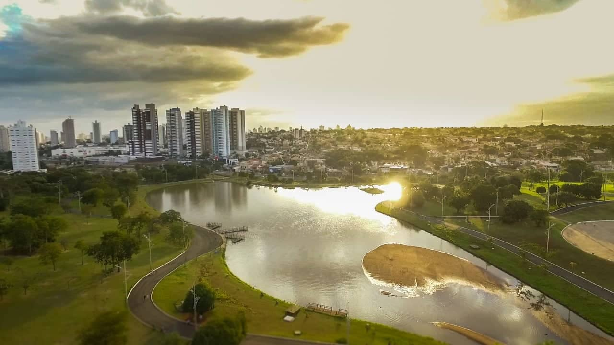

Mato Grosso do Sul, localizado no Centro-Oeste, tem uma população de aproximadamente 2,9 milhões de habitantes. A economia é impulsionada pelo agronegócio, com destaque na produção de soja, milho, carne bovina e celulose. Em 2022, o PIB do estado foi de R$ 166,8 bilhões, com previsão de crescimento para R$ 227 bilhões até 2025. O atual governador é Eduardo Riedel, que assumiu em 2023. A capital é Campo Grande, que tem cerca de 954 mil habitantes.

voltar